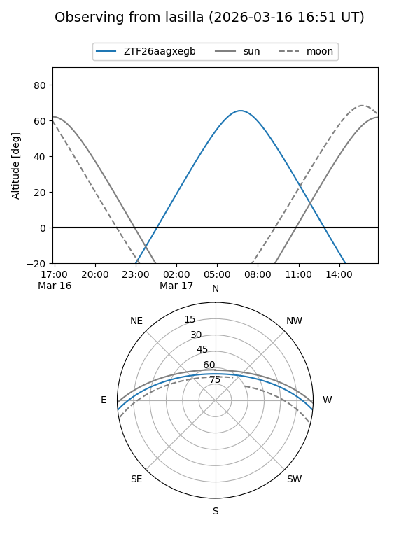
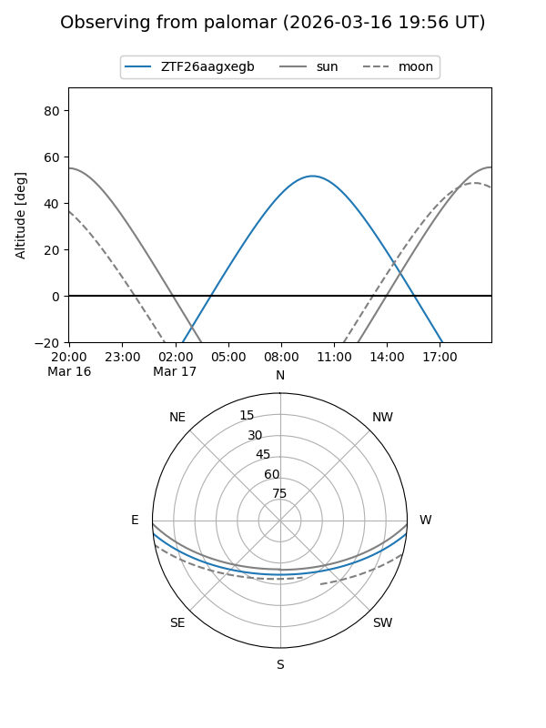

ZTF26aagxegb
Target ZTF26aagxegb at 2026-03-16 12:45
Aliases and brokers:
FINK: link
Lasair: link
ALeRCE: link
alt names
ZTF26aagxegb (ztf,fink_ztf)
Coordinates:
equatorial (ra, dec) = 204.6629,-4.78211
equatorial (HMS+DMS) = 13:38:39.09,-04:46:55.61
galactic (l, b) = (324.3754,+56.11137)
Flags:
Photometry:
last ztfg=17.86
1 ztfg detections
Lightcurve
Visibility


Additional plots